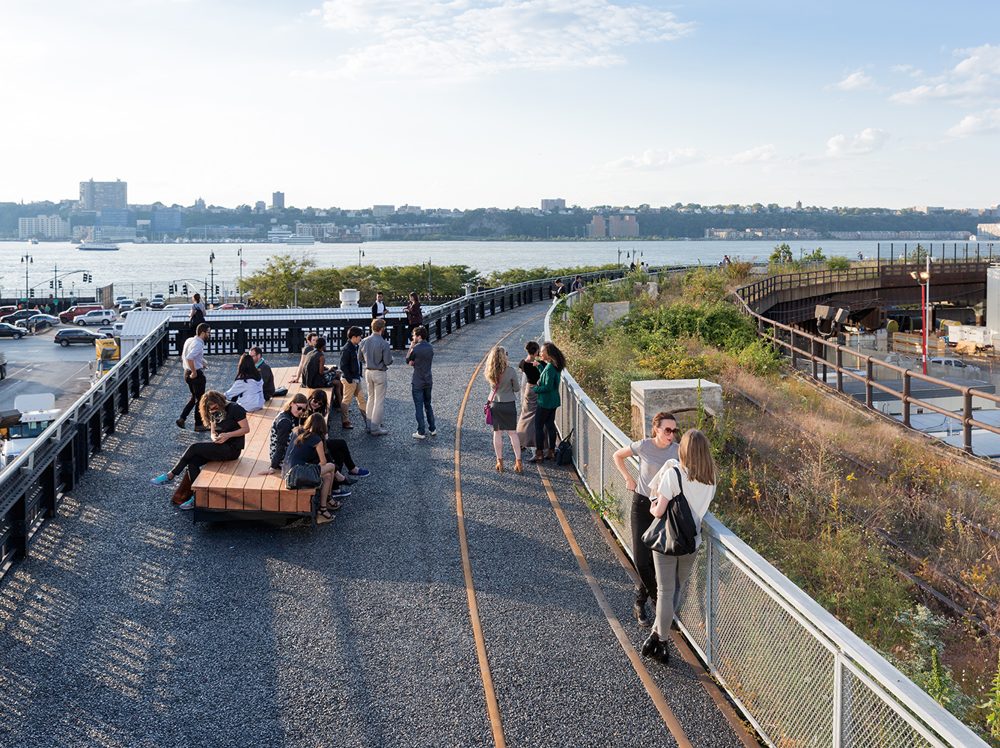

The High Line is a 1.45-mile-long (2.33 km) elevated linear park, greenway and rail trail created on a former New York Central Railroad spur on the west side of Manhattan in New York City. The High Line's design is a collaboration between James Corner Field Operations, Diller Scofidio + Renfro, and Piet Oudolf. The abandoned spur has been redesigned as a "living system" drawing from multiple disciplines which include landscape architecture, urban design, and ecology. The High Line was inspired by the 4.7 km (2.9 mi) long Coulée verte (tree-lined walkway), a similar project in Paris completed in 1993.